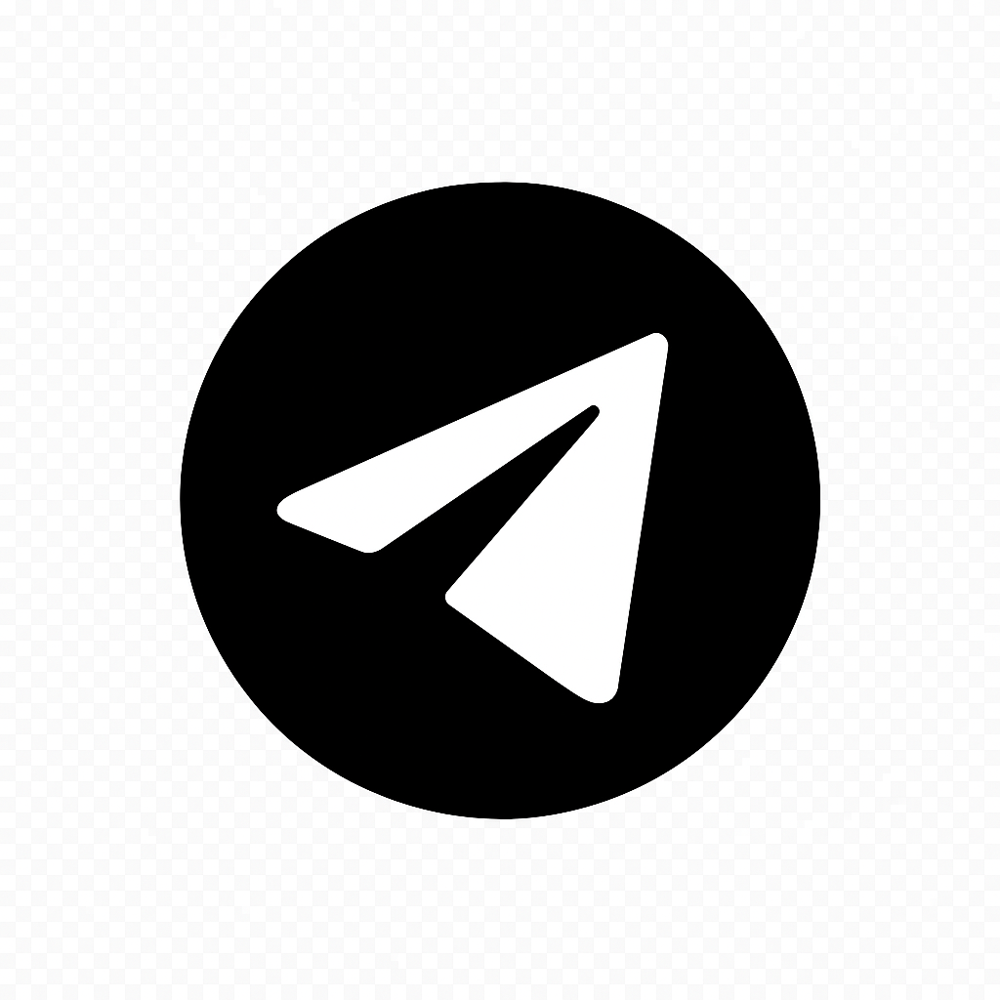

Головний
сервісний
центр
МВС
(044) 290-19-88
✓
Успіхи 2022

Людям із
порушенням
зору
☰
Про ГСЦ
Хто ми
Новини
Структура
Керівництво
Сервісні центри у медіа
Графіки особистого прийому
Успіхи та звіти «Таємний клієнт»
Євроінтеграція та міжнар. співпраця
Послуги
Кабінет водія
Е-запис
Контакти
Контакти ГСЦ
Контакти РСЦ/ТСЦ
Розпорядок роботи
Публічна інформація
Запобігання корупції
Відомості з реєстру ТЗ
Е-звернення громадян
Запит на інформацію
Держзакупівлі
Громадська експертиза
Оголошення
Нормативна база
Колегія
Change language: Eng
Результат перевірки посвідчення водія:
ПОВЕРНУТИСЯ